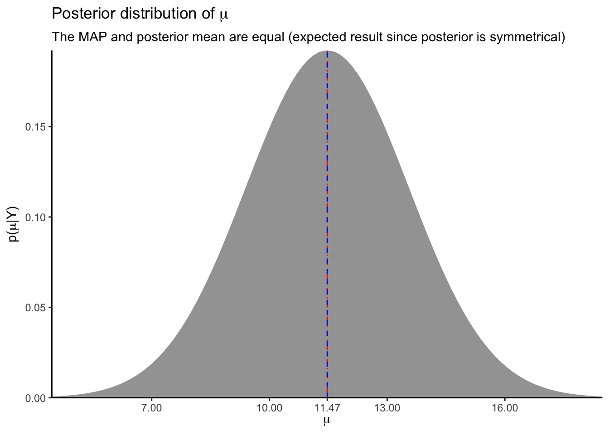
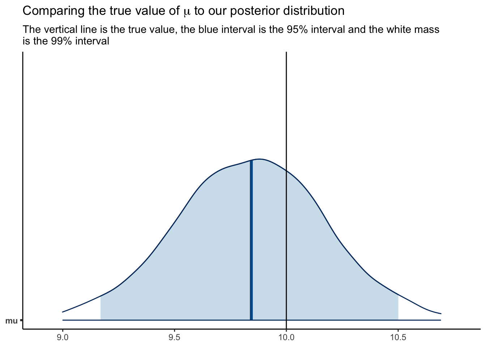

```{r}
#| output: hide
library(tidyr)
library(dplyr, warn.conflicts = FALSE)
library(stringr)
library(forcats)
library(ggplot2)
library(readr)
library(patchwork)
library(gt)
library(cubature)
library(purrr)
library(scales)
library(glue)
library(rjags)
library(posterior)
library(bayesplot)
theme_set(theme_classic())
```2
Assume that \(Y_i\vert\mu\overset{\mathrm{indep}}{\sim} \mathrm{Normal}(\mu,\sigma_i^2)\) for \(i \in \{1, \dots, n\}\), with \(\sigma_i\) known and improper prior distribution \(\pi(\mu)=1\) for all \(\mu\).
- Give a formula for the MAP estimator for \(\mu\)
Solution:
With a flat prior, our posterior distribution is simply equal to our likelihood.
\[ \begin{aligned} p(\mu \vert \mathbf Y) &= f(\mathbf Y \vert \mu, \mathbf \sigma) \\ &= \prod_{i = 1}^n\sigma_i^{-1} (2\pi)^{-1/2}\exp\left[-\frac{(Y_i - \mu)^2}{2\sigma_i^2}\right] \\ &\propto \prod_{i = 1}^n\sigma_i^{-1} \exp\left[-\frac{(Y_i - \mu)^2}{2\sigma_i^2}\right] \\ &= G(\mu) \end{aligned} \]
Take the log on both sides
\[ \begin{aligned} \log G(\mu) &= g(\mu) \\ &=\sum_{i=1}^n-\log\sigma_i - \frac{1}{2\sigma_i^2}(Y_i - \mu)^2 \\ &= -\sum_{i=1}^n n_i\log\sigma_i - \frac{1}{2\sigma_i^2}(Y_i^2 - 2Y_i\mu + \mu^2) \\ \frac{dg}{d\mu} &= \sum_{i=1}^n\frac{1}{2\sigma_i^2}(2\mu - 2Y_i) \\ &= \sum_{i=1}^n\frac{1}{\sigma_i^2}(\mu - Y_i) \end{aligned} \]
To find the MAP estimator, we find where this is equal to zero, i.e. \(dg/d\mu = 0\).
\[ \begin{aligned} \sum_{i=1}^n\frac{1}{\sigma_i^2}\mu &= \sum_{i=1}^n\frac{1}{\sigma_i^2}Y_i \\ \rightarrow \mu &= \frac{\sum_{i=1}^n\frac{1}{\sigma_i^2}Y_i}{\sum_{i=1}^n\frac{1}{\sigma_i^2}}. \end{aligned} \]
We see that the MAP estimator is simply a weighted average of the \(Y_i\)’s, where each observations contribution to the mean is inversely proportional to its variance. If all \(Y_i\) have the same variance, then this simplifies to the usual mean.
- We observe \(n=3, Y_1=12, Y_2=10, Y_3=22, \sigma_1=\sigma_2=3\) and \(\sigma_3=10\), compute the MAP estimate of \(\mu\).
Solution:
my_MAP <- function(n, Y, sigma) {
if (length(Y) != n) stop("Y should have length equal to n")
if (length(sigma) != n) stop("sigma should have length equal to n")
sum(Y / sigma^2) / sum(1/sigma^2)
}
n <- 3
Y <- c(12, 10, 22)
sigma <- c(3, 3, 10)
mu_MAP <- my_MAP(n, Y, sigma)
mu_MAP[1] 11.47368- Use numerical integration to compute the posterior mean of \(\mu\).
Solution:
The posterior distribution, being equal to the likelihood, is normalized with respect to \(Y\), but not necessarily with respect to \(\mu\). Therefore we first integrate over \(\mu\) to calculate the normalizing constant and then we can calculate the posterior mean.
unnormalized_posterior <- function(mu) {
logpost_unnormalized <- 0
for (i in seq_along(Y)) {
logpost_unnormalized <- logpost_unnormalized + dnorm(Y[i], mean = mu, sd = sigma[i], log = TRUE)
}
exp(logpost_unnormalized)
}
marginal <- integrate(unnormalized_posterior, lower = -Inf, upper = Inf)$value
marginal[1] 0.001840506unnormalized_posterior_mean <- function(mu) {
logpost_unnormalized <- 0
for (i in seq_along(Y)) {
logpost_unnormalized <- logpost_unnormalized + dnorm(Y[i], mean = mu, sd = sigma[i], log = TRUE)
}
mu * exp(logpost_unnormalized)
}
post_mean_unnorm <- integrate(unnormalized_posterior_mean, lower = -Inf, upper = Inf)$value
mu_MEAN <- post_mean_unnorm / marginal
mu_MEAN[1] 11.47368- Plot the posterior distribution of \(\mu\) and indicate the MAP and the posterior mean estimates on the plot.
Solution:
tibble(
mu = 11.47 + 7 * seq(-1, 1, length.out = 1e2)
) |>
mutate(
post = unnormalized_posterior(mu) / marginal
) |>
ggplot(aes(mu, post)) +
geom_area(
alpha = 0.5
) +
geom_vline(xintercept = mu_MAP, lty = 4, col = "red") +
geom_vline(xintercept = mu_MEAN, lty = 2, col = "blue") +
scale_x_continuous(
breaks = c(mu_MEAN, seq(7, 16, by = 3)),
labels = label_number(accuracy = 0.01)
) +
coord_cartesian(expand = FALSE) +
labs(
x = expression(mu),
y = expression(paste(p, "(", mu, "|", Y, ")")),
title = expression(paste("Posterior distribution of ", mu)),
subtitle = "The MAP and posterior mean are equal (expected result since posterior is symmetrical)"
)
4
Consider the model
\[ Y_i\vert\sigma^2_i\overset{\mathrm{indep}}{\sim} \mathrm{Normal}(0,\sigma_i^2), \]
for \(i \in \{1, \dots, n\}\) where
\[ \begin{gathered} \sigma_i^2\vert b \sim \mathrm{InvGamma}(a,b) \\ b\sim\mathrm{Gamma}(1,1) \end{gathered} \]
- Derive the full conditional posterior distributions for \(\sigma^2_1\) and \(b\).
Solution:
\[ \begin{aligned} p(\sigma^2_1\vert Y, b) &\propto f(Y \vert \sigma_1^2) \pi(\sigma_1^2\vert b) \\ &= \mathrm{Normal}(Y\vert \sigma_1^2) \cdot \mathrm{InvGamma}(\sigma_1^2\vert a,b)\\ &= {\sigma_1}^{-1}(2\pi)^{-1/2}\exp\left[-\frac{{Y_1}^2}{2{\sigma_1^2}}\right] \frac{{b}^{a}}{\Gamma(a)}{(\sigma_1^2)}^{-{a}-1}\exp\left(-{b}/{\sigma_1^2}\right) \\ &\propto {(\sigma_1^2)}^{-1/2}\exp\left[-\frac{{Y_1}^2}{2{\sigma_1^2}}\right] {(\sigma_1^2)}^{-{a}-1}\exp\left(-{b}/{\sigma_1^2}\right) \\ &= (\sigma_1^2)^{-(a+1/2) - 1} \exp\left[-\left(\frac{Y_1^2}{2} + b\right)/\sigma_1^2\right]. \end{aligned} \]
We see that the full conditional posterior for \(\sigma_1^2\) is an \(\mathrm{InvGamma}(a + 1/2, b + Y_1^2/2)\) distribution.
\[ \begin{aligned} p(b\vert \sigma_1, \dots, \sigma_n) &\propto \pi(b) \prod_{i=1}^n\pi(\sigma_i^2\vert b) \\ &= \exp\left(-b\right)\prod_{i=1}^n \frac{{b}^{a}}{\Gamma(a)}{(\sigma_i^2)}^{-{a}-1}\exp\left(-{b}/{\sigma_i^2}\right) \\ &\propto \exp\left(-b\right)\prod_{i=1}^n {b}^{a}\exp\left(-{b}/{\sigma_i^2}\right) \\ &= \exp\left(-b\right)b^{na} \exp\left( \sum_{i=1}^{n}{-b/\sigma_i^2}\right) \\ &= b^{(1+na)-1}\exp\left(-b - \sum_{i=1}^{n}{}\frac{1}{ \sigma_i^2}b\right) \\ &= b^{(1+na)-1} \exp\left(-\left(1 + \sum_{i=1}^{n}{}\frac{1}{\sigma_i^2}\right)b\right). \end{aligned} \]
We also see that the full conditional posterior for \(b\) is an \(\mathrm{Gamma}(1 + na, 1 + \sum_{i=1}^{n}{}\frac{1}{\sigma_i^2})\) distribution.
- Write pseudocode for Gibbs sampling, i.e. describe in detail each step of the Gibbs sampling algorithm.
Solution: In Gibbs sampling we iterate over each unknown parameter and sample from its full conditional posterior distribution. In our case the unknown parameters are the \(\sigma_i^2\)’s and \(b\). To perform Gibbs sampling we would therefore do the following:
set a large value for N_samples
set a value for a
read in data Y as length n vector
initialize b by sampling from prior
initialize sigma2 as a length n vector by sampling from prior
for i from 1 to N_samples:
for j from 1 to n:
sample sigma2[i] from InvGamma(a + 1/2, b + Y[i]^2/2)
end for
sample b from InvGamma(n*a, 1 + sum(1/sigma2))- Write your own Gibbs sampling code (not in
JAGS) and plot the marginal posterior density of each parameter. Assume \(n=10\), \(a=10\) and \(Y_i=i\) for \(i=1, \dots, 10\).
Solution:
We’re going to use the posterior package to easily analyze our posterior distribution after we’ve run our Gibbs sampler. The posterior package gives us acces to a draws_df data type that we can create using the as_draws_df() function. To be able to convert our posterior into a draws_df, we want to save our results in an array with dimensions \(\mathrm{N_{sample}\times N_{chain} \times N_{variable}}\). I am planning on performing 10000 samples in each of 4 chains and there are 11 total variables, so our array will have the shape \(10000 \times 4 \times 11\). We then have to keep track of which dimension we are indexing at each time.
First we define functions for sampling from each parameter’s full conditional distribution.
sample_sigma2 <- function(a, b, Y) {
1/rgamma(length(Y), shape = a + 1/2, rate = b + Y^2/2)
}sample_b <- function(n, a, sigma2) {
rgamma(1, shape = n * a + 1, rate = 1 + sum(1/sigma2))
}We then write a function for Gibbs sampling that wraps around these two functions defined above. The gibbs_sampler function needs five inputs:
n_samples: The number of samples we want from our posterior within each chainn_chain: The number of chains we want to runn_variables: The number of variables in our posteriorY: Our observed dataa: For our inverse gamma priorn_burnin: The number of samples we want to draw as part of our burn-in. This is by default equal ton_samples
gibbs_sampler <- function(n_samples, n_chains, n_variables, Y, a, n_burnin = n_samples) {
posterior <- array(dim = c(n_samples, n_chains, n_variables))
dimnames(posterior)[[3]] <- c("b", glue("sigma[{1:10}]"))
for (chain in seq_len(n_chains)) {
# Initial values for the Gibbs sampler
b_value <- 1
sigma2_value <- sample_sigma2(a, b_value, Y)
# Burn-in period
# Run the sampler without saving our values
for (i in seq_len(n_burnin)) {
b_value <- sample_b(n, a, sigma2_value)
sigma2_value <- sample_sigma2(a, b_value, Y)
}
# Running the Gibbs sampler for n_samples iterations
for (i in seq_len(n_samples)) {
# Here we perform the sampling
b_value <- sample_b(n, a, sigma2_value)
sigma2_value <- sample_sigma2(a, b_value, Y)
# Here we store the samples in our array
# Pay close attention to the indexing
posterior[i, chain, 1] <- b_value
posterior[i, chain, -1] <- sigma2_value
}
}
# Convert our array into a draws_df
posterior |>
as_draws_df()
}n <- 10
a <- 10
Y <- 1:10
# 10xsigma2 + b = 11
n_variables <- n + 1
n_chains <- 4
n_samples <- 1e4
posterior <- gibbs_sampler(n_samples, n_chains, n_variables, Y, a)Having done the preparatory work of converting our results into a draws_df object, we are rewarded with access the great bayesplot package for plotting our posterior.
posterior |>
mcmc_dens()
summarised_results_gibbs <- posterior |>
summarise_draws()
summarised_results_gibbs |>
gt() |>
fmt_number(
decimals = 2,
columns = mean:rhat
) |>
fmt_number(
decimals = 0,
columns = starts_with("ess")
) |>
tab_header(
title = "Summarizing the posterior distribution of our model"
)| Summarizing the posterior distribution of our model | |||||||||
| variable | mean | median | sd | mad | q5 | q95 | rhat | ess_bulk | ess_tail |
|---|---|---|---|---|---|---|---|---|---|
| b | 30.20 | 29.93 | 4.31 | 4.24 | 23.65 | 37.72 | 1.00 | 11,552 | 22,966 |
| sigma[1] | 3.23 | 2.99 | 1.22 | 1.01 | 1.77 | 5.50 | 1.00 | 21,804 | 33,847 |
| sigma[2] | 3.38 | 3.14 | 1.26 | 1.03 | 1.86 | 5.69 | 1.00 | 22,581 | 33,468 |
| sigma[3] | 3.65 | 3.40 | 1.34 | 1.12 | 2.02 | 6.13 | 1.00 | 25,296 | 34,287 |
| sigma[4] | 4.02 | 3.74 | 1.47 | 1.21 | 2.24 | 6.71 | 1.00 | 26,630 | 34,961 |
| sigma[5] | 4.50 | 4.18 | 1.61 | 1.35 | 2.54 | 7.54 | 1.00 | 27,917 | 36,965 |
| sigma[6] | 5.06 | 4.71 | 1.80 | 1.50 | 2.87 | 8.46 | 1.00 | 29,728 | 36,865 |
| sigma[7] | 5.75 | 5.35 | 2.04 | 1.68 | 3.28 | 9.53 | 1.00 | 32,152 | 36,913 |
| sigma[8] | 6.54 | 6.11 | 2.27 | 1.91 | 3.75 | 10.79 | 1.00 | 35,027 | 37,460 |
| sigma[9] | 7.43 | 6.92 | 2.59 | 2.16 | 4.27 | 12.25 | 1.00 | 33,547 | 36,677 |
| sigma[10] | 8.46 | 7.89 | 2.94 | 2.46 | 4.89 | 13.97 | 1.00 | 34,542 | 38,049 |
- Repeat the analysis with \(a=1\) and comment on the convergence of the MCMC chain.
Solution: We can now reuse our code from above, only having to change the value of a
a <- 1
posterior <- gibbs_sampler(n_samples, n_chains, n_variables, Y, a)Having done the preparatory work of converting our results into a draws_df object, we are rewarded with the great functions available in the posterior package. The summarise_draws() function is a great way to easily obtain summarized results about our posterior.
The table below shows us that \(\hat R\) and our effective sample size (ESS) are both acceptable, so it seems our sampler has converged.
The \(\hat R\) is not the same as in the book, since the posterior package has implemented the proposed updates from Vehtari et al. (2021) that increase its ability to find faulty convergence. Have a look at the article to learn more about convergence. You can also read about \(\mathrm{ESS_{bulk}}\) and \(\mathrm{ESS_{tail}}\) there, but in simple terms, they calculate the ESS for the center and the tails of the posterior distributions.
Vehtari, Aki, Andrew Gelman, Daniel Simpson, Bob Carpenter, and Paul-Christian Bürkner. 2021. “Rank-Normalization, Folding, and Localization: An Improved Rˆ for Assessing Convergence of MCMC (with Discussion).” Bayesian Analysis 16 (2): 667–718. https://doi.org/10.1214/20-BA1221.
summarised_results_gibbs <- posterior |>
summarise_draws()
summarised_results_gibbs |>
gt() |>
fmt_number(
decimals = 2,
columns = mean:rhat
) |>
fmt_number(
decimals = 0,
columns = starts_with("ess")
) |>
tab_header(
title = "Summarizing the posterior distribution of our model"
)| Summarizing the posterior distribution of our model | |||||||||
| variable | mean | median | sd | mad | q5 | q95 | rhat | ess_bulk | ess_tail |
|---|---|---|---|---|---|---|---|---|---|
| b | 5.54 | 5.28 | 1.97 | 1.88 | 2.79 | 9.12 | 1.00 | 22,024 | 31,279 |
| sigma[1] | 11.34 | 4.91 | 48.18 | 4.07 | 1.31 | 33.81 | 1.00 | 30,173 | 33,931 |
| sigma[2] | 15.21 | 6.24 | 130.21 | 5.09 | 1.71 | 44.20 | 1.00 | 32,750 | 34,818 |
| sigma[3] | 19.69 | 8.40 | 89.19 | 6.69 | 2.44 | 56.49 | 1.00 | 35,290 | 36,466 |
| sigma[4] | 26.15 | 11.27 | 149.06 | 8.92 | 3.36 | 76.25 | 1.00 | 37,617 | 39,192 |
| sigma[5] | 34.55 | 15.21 | 158.54 | 11.94 | 4.54 | 99.36 | 1.00 | 38,157 | 38,252 |
| sigma[6] | 46.75 | 19.92 | 306.64 | 15.71 | 6.00 | 134.91 | 1.00 | 38,514 | 38,680 |
| sigma[7] | 59.00 | 25.53 | 308.68 | 19.97 | 7.67 | 171.35 | 1.00 | 39,321 | 40,182 |
| sigma[8] | 73.19 | 31.97 | 267.75 | 25.18 | 9.59 | 217.86 | 1.00 | 39,359 | 39,601 |
| sigma[9] | 87.08 | 38.93 | 306.94 | 30.51 | 11.72 | 263.16 | 1.00 | 40,203 | 39,421 |
| sigma[10] | 107.41 | 46.62 | 616.37 | 36.29 | 14.20 | 304.63 | 1.00 | 39,342 | 39,497 |
- Implement the model in c. using
JAGSand compare the results with the results in c.
Solution:
data = list(
Y = 1:10
)
model_string <- textConnection("model{
# Likelihood
for (i in 1:10) {
Y[i] ~ dnorm(0, tau[i])
}
# Priors
for (i in 1:10) {
tau[i] ~ dgamma(10, b)
sigma[i] <- 1 / tau[i]
}
b ~ dgamma(1, 1)
}")
inits <- list(
b = 1,
tau = rep(1, 10)
)
model <- jags.model(
model_string,
data = data,
inits = inits,
n.chains = 4
)Compiling model graph
Resolving undeclared variables
Allocating nodes
Graph information:
Observed stochastic nodes: 10
Unobserved stochastic nodes: 11
Total graph size: 34
Initializing modelupdate(model, 10000)
params <- names(inits)
samples <- coda.samples(
model,
variable.names = c("b", "sigma"),
n.iter = 10000
)
posterior_jags <- samples |>
as_draws_df()The posterior package allows us to take our samples object that was output by coda.samples() and use as_draws_df() to convert it into a comfortable data type.
summarised_results_jags <- posterior_jags |>
summarise_draws()
summarised_results_jags |>
gt() |>
fmt_number(
decimals = 2,
columns = mean:rhat
) |>
fmt_number(
decimals = 0,
columns = starts_with("ess")
) |>
tab_header(
title = "Summarizing the posterior distribution of our model"
)| Summarizing the posterior distribution of our model | |||||||||
| variable | mean | median | sd | mad | q5 | q95 | rhat | ess_bulk | ess_tail |
|---|---|---|---|---|---|---|---|---|---|
| b | 30.21 | 29.95 | 4.36 | 4.29 | 23.53 | 37.81 | 1.00 | 12,622 | 22,058 |
| sigma[1] | 3.23 | 3.00 | 1.21 | 1.01 | 1.76 | 5.53 | 1.00 | 23,437 | 32,035 |
| sigma[2] | 3.39 | 3.15 | 1.27 | 1.06 | 1.86 | 5.75 | 1.00 | 23,804 | 33,242 |
| sigma[3] | 3.65 | 3.39 | 1.35 | 1.12 | 2.02 | 6.14 | 1.00 | 24,984 | 32,561 |
| sigma[4] | 4.02 | 3.73 | 1.48 | 1.22 | 2.23 | 6.82 | 1.00 | 26,073 | 34,522 |
| sigma[5] | 4.50 | 4.17 | 1.62 | 1.34 | 2.53 | 7.57 | 1.00 | 29,034 | 35,912 |
| sigma[6] | 5.09 | 4.73 | 1.83 | 1.51 | 2.87 | 8.49 | 1.00 | 30,910 | 36,530 |
| sigma[7] | 5.77 | 5.37 | 2.07 | 1.71 | 3.26 | 9.60 | 1.00 | 31,105 | 36,257 |
| sigma[8] | 6.55 | 6.10 | 2.29 | 1.92 | 3.76 | 10.79 | 1.00 | 31,554 | 36,096 |
| sigma[9] | 7.44 | 6.95 | 2.58 | 2.18 | 4.26 | 12.24 | 1.00 | 33,951 | 36,438 |
| sigma[10] | 8.45 | 7.90 | 2.93 | 2.46 | 4.84 | 13.91 | 1.00 | 35,296 | 38,686 |
summarised_results_gibbs <- gibbs_sampler(n_samples, n_chains, n_variables, Y, a = 10) |>
summarise_draws()
summarised_results_combined <- summarised_results_gibbs |>
mutate(
type = "Bespoke Gibbs"
) |>
bind_rows(
summarised_results_jags |>
mutate(
type = "JAGS"
)
)
summarised_results_combined |>
filter(str_detect(variable, "sigma")) |>
mutate(
variable = fct_reorder(variable, -parse_number(variable))
) |>
ggplot(aes(
y = variable,
x = mean, xmin = q5, xmax = q95,
col = type
)) +
geom_pointrange(
position = position_dodge(width = 0.7)
) +
scale_color_brewer(palette = "Set1") +
labs(
x = NULL,
y = NULL,
title = "Comparing our bespoke Gibbs sampler to JAGS",
subtitle = "The results seem to be identical",
col = "Sampler"
)
Code
summarised_results_combined |>
filter(!str_detect(variable, "sigma")) |>
ggplot(aes(
y = variable,
x = mean, xmin = q5, xmax = q95,
col = type
)) +
geom_pointrange(
position = position_dodge(width = 0.7)
) +
scale_color_brewer(palette = "Set1") +
theme(legend.position = "none") +
labs(
x = NULL,
y = NULL,
title = "Comparing our bespoke Gibbs sampler to JAGS",
subtitle = "The results seem to be identical",
col = "Sampler"
)
5
Consider the model
\[ Y_i\vert\mu, \sigma^2 \sim \mathrm{Normal}(\mu,\sigma^2),\quad i=1,\dots,n, \]
and
\[ Y_i\vert\mu,\delta, \sigma^2 \sim \mathrm{Normal}(\mu+\delta,\sigma^2),\quad i=n+1,\dots,n+m, \]
where
\[ \begin{gathered} \mu,\delta\sim\mathrm{Normal}(0, 100^2) \\ \sigma^2\sim\mathrm{InvGamma}(0.01, 0.01). \end{gathered} \]
- Give an example of a real experiment for which this would be an appropriate model.
Solution: A simple example would be a clinical trial for a pharmaceutical company wanting to know if a drug has a positive effect on patients. In this case, \(\mu\) could be the average outcome of patients in the control group (who did not get the drug), and \(\mu + \delta\) the average outcome of patients in the case group (who did get the drug). The effect of the drug could then be estimated as \(\delta\).
- Derive the full conditional posterior distributions for \(\mu\), \(\delta\), and \(\sigma^2\).
Solution:
We have three unknown parameters: \(\mu\), \(\delta\) and \(\sigma^2\).
\[ \begin{aligned} p(\mu \vert \mathbf Y, \sigma^2, \delta) &\propto f(\mathbf Y \vert \mu, \sigma^2, \delta)\pi(\mu) \\ &= \prod_{i=1}^{n}{\mathrm{Normal}(Y_i\vert \mu, \sigma^2)} \prod_{j=n+1}^{n+m}{\mathrm{Normal}(Y_j\vert \mu, \delta, \sigma^2)} \mathrm{Normal}(\mu\vert 0, 100^2) \\ &= \prod_{i=1}^{n}\left({ {\sigma}^{-1}(2\pi)^{-1/2}\exp\left[-\frac{({Y_i} - {\mu})^2}{2{\sigma}^2}\right]}\right) \prod_{j=n+1}^{n+m}\left({ {\sigma}^{-1}(2\pi)^{-1/2}\exp\left[-\frac{({Y_j} - {(\mu + \delta)})^2}{2{\sigma}^2}\right]}\right) {100}^{-1}(2\pi)^{-1/2}\exp\left[-\frac{\mu^2}{2\cdot {100}^2}\right] \\ &\propto \prod_{i=1}^{n}\left({\exp\left[-\frac{({Y_i} - {\mu})^2}{2{\sigma}^2}\right]}\right) \prod_{j=n+1}^{n+m}\left({ \exp\left[-\frac{({Y_j} - {[\mu + \delta }])^2}{2{\sigma}^2}\right]}\right) \exp\left[-\frac{\mu^2}{2\cdot {100}^2}\right] \\ &= \exp\left[ -\frac{1}{2\sigma^2}\left( \sum_{i=1}^{n}{(Y_i - \mu)^2 + \sum_{j=n+1}^{n+m}{(Y_j - \mu - \delta)^2}}\right) - \frac{1}{2\cdot100^2}\mu^2\right]. \end{aligned} \]
Simplifying and completing the square, we eventually end up with
\[ p(\mu \vert \mathbf Y, \sigma^2, \delta) = \mathrm{Normal}\left( \frac{\frac{1}{\sigma^2} \sum_{i=1}^{n}{Y_i} + \frac{1}{\sigma^2} \sum_{j=n+1}^{n+m}{(Y_i- \delta)}}{ \frac{(n+m)}{\sigma^2} + 1/100^2}, \frac{1}{\frac{(n+m)}{\sigma^2} + 1/100^2}\right). \]
Similarly, we find out that
\[ p(\delta \vert \mathbf Y, \mu, \sigma^2) = \mathrm{Normal}\left( \frac{ \frac{1}{\sigma^2} \sum_{j=n+1}^{n+m}{(Y_i-\mu)}}{ \frac{m}{\sigma^2} + 1/100^2}, \frac{1}{{ \frac{m}{\sigma^2} + 1/100^2}}\right). \]
The posterior for \(\sigma^2\) is
\[ p(\sigma^2 \vert \mathbf Y, \mu, \delta) = \mathrm{InvGamma}\left(0.01 + (n+m)/2, 0.01 + \sum_{i=1}^{n}{(Y_i-\mu)^2/2} + \sum_{j=n+1}^{n+m}{(Y_i - \mu - \delta)^2/2}\right) \]
- Simulate a dataset from this model with \(n=m=50\), \(\mu=10\), \(\delta=1\) and \(\sigma=2\). Write your own Gibbs sampling code (not in
JAGS) to fit the model above to the simulated data and plot the marginal posterior density for each parameter. Are you able to recover the true values reasonably well?
Solution:
n <- 50
m <- 50
mu <- 10
delta <- 1
sigma <- 2
Y1 <- rnorm(n, mu, sigma)
Y2 <- rnorm(m, mu + delta, sigma)sample_mu <- function(Y1, Y2, sigma2, delta) {
n <- length(Y1)
m <- length(Y2)
numerator <- 1/sigma2 * (sum(Y1) + sum(Y2 - delta))
denominator <- (n + m) / (sigma2) + 1/100^2
rnorm(
n = 1,
mean = numerator / denominator,
sd = 1 / sqrt(denominator)
)
}
sample_delta <- function(Y2, mu, sigma2) {
m <- length(Y2)
numerator <- 1/sigma2 * sum(Y2 - mu)
denominator <- m/sigma2 + 1/100^2
rnorm(
n = 1,
mean = numerator / denominator,
sd = 1 / sqrt(denominator)
)
}
sample_sigma2 <- function(Y1, Y2, mu, delta) {
shape <- 0.01 + (n + m) / 2
rate <- 0.01 + sum((Y1 - mu)^2)/2 + sum((Y2 - mu - delta)^2)/2
n <- length(Y1)
m <- length(Y2)
1 / rgamma(
n = 1,
shape = shape,
rate = rate
)
}gibbs_sampler <- function(n_samples, n_chains, n_variables, Y1, Y2, n_burnin = n_samples) {
posterior <- array(dim = c(n_samples, n_chains, n_variables))
dimnames(posterior)[[3]] <- c("mu", "delta", "sigma2")
for (chain in seq_len(n_chains)) {
# Initial values for the Gibbs sampler
mu_value <- rnorm(1, 0, 100)
delta_value <- rnorm(1, 0, 100)
sigma2_value <- 1 / rgamma(1, shape = 0.01, rate = 0.01)
# Burn-in period
# Run the sampler without saving our values
for (i in seq_len(n_burnin)) {
mu_value <- sample_mu(Y1, Y2, sigma2_value, delta_value)
delta_value <- sample_delta(Y2, mu_value, sigma2_value)
sigma2_value <- sample_sigma2(Y1, Y2, mu_value, delta_value)
}
# Running the Gibbs sampler for n_samples iterations
for (i in seq_len(n_samples)) {
# Here we perform the sampling
mu_value <- sample_mu(Y1, Y2, sigma2_value, delta_value)
delta_value <- sample_delta(Y2, mu_value, sigma2_value)
sigma2_value <- sample_sigma2(Y1, Y2, mu_value, delta_value)
# Here we store the samples in our array
# Pay close attention to the indexing
posterior[i, chain, ] <- c(mu_value, delta_value, sigma2_value)
}
}
# Convert our array into a draws_df
posterior |>
as_draws_df()
}n_samples <- 1e3
n_chains <- 4
n_variables <- 3
posterior <- gibbs_sampler(n_samples, n_chains, n_variables, Y1, Y2)The three plots below show us that out Gibbs sampler manages to adequately capture the true values of our parameters.
posterior |>
mcmc_areas(
pars = "mu",
prob = 0.95,
prob_outer = 0.99
) +
geom_vline(xintercept = mu) +
labs(
title = expression(paste("Comparing the true value of ", mu, " to our posterior distribution")),
subtitle = "The vertical line is the true value, the blue interval is the 95% interval and the white mass\nis the 99% interval"
)
posterior |>
mcmc_areas(
pars = "delta",
prob = 0.95,
prob_outer = 0.99
) +
geom_vline(xintercept = delta) +
labs(
title = expression(paste("Comparing the true value of ", delta, " to our posterior distribution")),
subtitle = "The vertical line is the true value, the blue interval is the 95% interval and the white mass\nis the 99% interval"
)
posterior |>
mcmc_areas(
pars = "sigma2",
prob = 0.95,
prob_outer = 0.99
) +
geom_vline(xintercept = sigma^2) +
labs(
title = expression(paste("Comparing the true value of ", sigma^2, " to our posterior distribution")),
subtitle = "The vertical line is the true value, the blue interval is the 95% interval and the white mass\nis the 99% interval"
)
- Implement this model using
JAGSand compare the results with the results in .c.
Solution:
data = list(
Y1 = Y1,
Y2 = Y2,
n = n,
m = m
)
model_string <- textConnection("model{
# Likelihood
for (i in 1:n) {
Y1[i] ~ dnorm(mu, tau)
}
for (i in 1:m) {
Y2[i] ~ dnorm(mu + delta, tau)
}
# Priors
mu ~ dnorm(0, 0.01^2)
delta ~ dnorm(0, 0.01^2)
tau ~ dgamma(0.01, 0.01)
sigma2 <- 1 / tau
}")
inits <- list(
mu = mean(Y1),
delta = mean(Y2) - mean(Y1),
tau = 1 / var(Y1)
)
model <- jags.model(
model_string,
data = data,
inits = inits,
n.chains = 4
)Compiling model graph
Resolving undeclared variables
Allocating nodes
Graph information:
Observed stochastic nodes: 100
Unobserved stochastic nodes: 3
Total graph size: 112
Initializing modelupdate(model, 10000)
params <- names(inits)
samples <- coda.samples(
model,
variable.names = c("mu", "delta", "sigma2"),
n.iter = 10000
)
posterior_jags <- samples |>
as_draws_df()summarised_results_combined <- posterior |>
summarise_draws() |>
mutate(
type = "Bespoke Gibbs"
) |>
bind_rows(
posterior_jags |>
summarise_draws() |>
mutate(
type = "JAGS"
)
)
summarised_results_combined |>
ggplot(aes(
y = type,
x = mean, xmin = q5, xmax = q95,
col = type
)) +
geom_pointrange(
position = position_dodge(width = 0.7)
) +
scale_color_brewer(palette = "Set1") +
facet_wrap("variable", scales = "free_x", ncol = 1) +
labs(
x = NULL,
y = NULL,
title = "Comparing our bespoke Gibbs sampler to JAGS",
subtitle = "The results seem to be identical",
col = "Sampler"
)
10
As discussed in section 1.6, report that the number of marine bivalve species discovered each year from 2010-2015 was 64, 13, 33, 18, 30 and 20. Denote \(Y_t\) as the number of species discovered in year \(2009+t\) (so that \(Y_1=64\) is the count for 2010). Use JAGS to fit the model
\[ \begin{gathered} Y_t\vert \alpha, \beta \overset{\mathrm{indep}}{\sim} \mathrm{Poisson}(\lambda_t)\\ \lambda_t = \exp(\alpha + \beta t) \text{ or equivalently } \log(\lambda_t) = \alpha + \beta t \\ \alpha,\beta \overset{\mathrm{indep}}{\sim} \mathrm{Normal}(0,10^2). \end{gathered} \]
Summarize the posterior of \(\alpha\) and \(\beta\) and verify that the MCMC sampler has converged. Does this analysis provide evidence that the rate of discovery is changing over time?
data = list(
Y = c(64, 13, 33, 18, 30, 20),
n = 6
)
model_string <- textConnection("model{
# Likelihood
for (i in 1:n) {
Y[i] ~ dpois(lambda[i])
lambda[i] <- exp(alpha + beta * i)
}
alpha ~ dnorm(0, 0.1^2)
beta ~ dnorm(0, 0.1^2)
}")
inits <- list(
alpha = 0,
beta = 0
)
model <- jags.model(
model_string,
data = data,
inits = inits,
n.chains = 4
)Compiling model graph
Resolving undeclared variables
Allocating nodes
Graph information:
Observed stochastic nodes: 6
Unobserved stochastic nodes: 2
Total graph size: 36
Initializing modelupdate(model, 10000)
params <- names(inits)
samples <- coda.samples(
model,
variable.names = params,
n.iter = 10000
)
posterior_jags <- samples |>
as_draws_df()The table below shows us that that here is a high posterior probability that \(\beta < 0\). Thus we can infer that the rate is changing over time.
posterior_jags |>
summarise_draws() |>
gt() |>
tab_header(
title = "Summary of our posterior distribution"
) |>
fmt_number(
decimals = 2
)| Summary of our posterior distribution | |||||||||
| variable | mean | median | sd | mad | q5 | q95 | rhat | ess_bulk | ess_tail |
|---|---|---|---|---|---|---|---|---|---|
| alpha | 3.98 | 3.98 | 0.16 | 0.15 | 3.72 | 4.23 | 1.00 | 3,510.94 | 6,837.49 |
| beta | −0.18 | −0.18 | 0.05 | 0.05 | −0.26 | −0.11 | 1.00 | 3,486.95 | 7,155.54 |